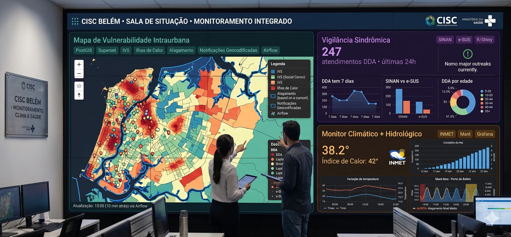

Ambiente operacional: Videowall 4K integrado ao centro de comando.
flowchart TD
classDef fonte fill:#082f49,stroke:#0ea5e9,stroke-width:2px,color:#e0f2fe;
classDef motor fill:#451a03,stroke:#f59e0b,stroke-width:2px,color:#fef3c7;
classDef painel fill:#042f2e,stroke:#14b8a6,stroke-width:2px,color:#ccfbf1;
classDef alerta fill:#450a0a,stroke:#ef4444,stroke-width:2px,color:#fecaca;
subgraph DADOS ["Fontes de Dados (via Airflow)"]
D1["SINAN / e-SUS / SIH
(Eixo 1: Epidemio)"]:::fonte
D2["PostGIS + IBGE + IVS
(Eixo 2: Geógrafo)"]:::fonte
D3["INMET / CEMADEN / ANA / Maré
(Eixo 3: Meteo)"]:::fonte
D4["Modelos R + ML
(Eixo 4: Cientista)"]:::fonte
end
subgraph DW ["PostgreSQL / PostGIS"]
DB[("Única Fonte de Verdade
(Dados Validados)")]:::motor
end
subgraph SALA ["Videowall 80 polegadas — Sala de Situação"]
direction LR
P1["🗺️ Mapa de Vulnerabilidade
(Superset)"]:::painel
P2["📊 Vigilância Sindrômica
(Grafana + R/Shiny)"]:::painel
P3["🌡️ Monitor Climático
(Grafana Real-time)"]:::painel
end
subgraph ALERTA ["Motor de Alertas"]
A1["🚨 Gatilho Automático
(Threshold ultrapassado)"]:::alerta
A2["📢 Disparo de Protocolo
(SMS, Defesa Civil)"]:::alerta
end
D1 --> DB
D2 --> DB
D3 --> DB
D4 --> DB
DB --> P1
DB --> P2
DB --> P3
P2 -.->|Anomalia Detectada| A1
P3 -.->|Forecast 72h| A1
A1 --> A2
Operação da Sala de Situação
O Videowall é dividido em 3 zonas visuais. Cada zona atende a pelo menos 2 eixos profissionais e é alimentada por uma ferramenta de BI específica.
🗺️ Zona 1 — Mapa Central
Ocupa metade esquerda da tela. Exibe o mapa de calor de Belém com camadas sobrepostas: vulnerabilidade social (IVS), ilhas de calor urbano, manchas históricas de alagamento e notificações geocodificadas em tempo real.
Ferramenta: Apache Superset (deck.gl maps) · Eixos: Geógrafo + Epidemio + Meteo
📊 Zona 2 — Vigilância
Quadrante superior direito. Séries temporais de agravos sensíveis ao clima (DDA, arboviroses, SRAG). Linha de base histórica (média esperada) vs. dados atuais. Detecta automaticamente quando o excesso ultrapassa thresholds estatísticos.
Ferramenta: Grafana + R/Shiny embed · Eixos: Epidemio + Cientista de Dados
🌡️ Zona 3 — Clima
Quadrante inferior direito. Temperatura (Tmax, Tmin, Índice de Calor), precipitação acumulada, umidade, qualidade do ar, nível de rios e tábua de maré. Forecast de 72h com sinalização de gatilhos de alerta.
Ferramenta: Grafana real-time · Eixos: Meteorologista + Cientista de Dados
Protocolo de Alertas Visuais e Sonoros
O Grafana dispara alertas visuais (mudança de cor do painel) e sonoros (alarme na sala) quando os thresholds são ultrapassados. Os 4 níveis operacionais: